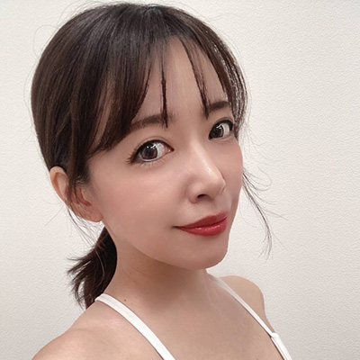

セルフ整体
Asuka
セルフ整体
タレントとしてメディアに出演。
美容サロン、ボディサロンで修行。
セルフ整体インストラクター取得。
ボディサロンでは『触れる施術』、セルフ整体で『触れない施術』両面からのサポートを目指しています
自分のチカラで身体を変えることが出来る！一生物の技術「セルフ整体」
姿勢改善、猫背、肩こり、腰痛、O脚、ダイエットしたい人、可動域を上げたい人。軸を整えたい人。身体を整えて怪我を防止したい人をサポートします！
自分で調整しながら動くので痛くない。10代から80代、オリンピックメダル選手のアスリートでも整う事ができます。